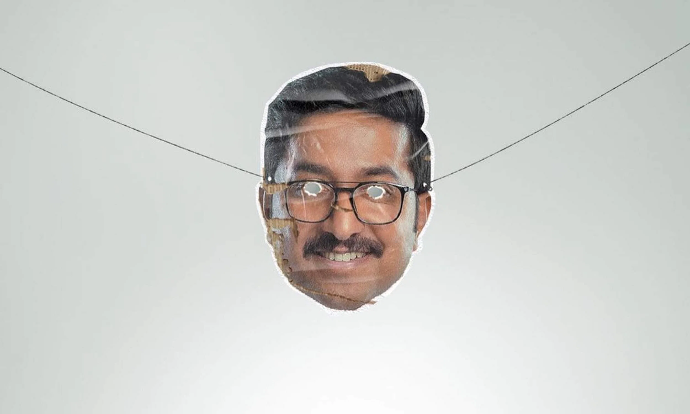

Bhaskar finds himself changing after being bitten by a wolf in the forests of Arunachal. While Bhaskar begins to transform into a shape-shifting werewolf, he and his friends look for answers amid many twists, turns and laughs.
Kooman
Kooman: The Night Rider is a 2022 Indian Malayalam-language mystery thriller film directed by Jeethu Joseph and jointly produced by Listin Stephen and Allwin Antony through Magic Frames and Ananya Films, with a screenplay by K. R. Krishna Kumar.
Aanaparambile World Cup
A small village in the northern part of Kerala prepares to witness the World Cup. The life of a 9-year-old boy, an ardent soccer fan, is transformed when an unexpected guest arrives.
Mukundan Unni Associates

Mukundan Unni Associates is a 2022 Indian Malayalam-language black comedy film directed by Abhinav Sunder Nayak featuring Vineeth Sreenivasan and Suraj Venjaramoodu in lead roles. The film received mostly positive reviews from critics. Mukundan Unni Associates. Directed by. Abhinav Sunder Nayak.